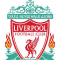

Rodri, el jugador del City ya aviso del problema de los partidos y que cada vez se lesionan mas los jugadores. ¿Crees que tiene razón y que se debería pensar mas en los jugadores?
QUE HABLEN LOS QUE SABEN
Alexander Arnold es el jugador que piensan los madridistas para sustituir a Carbajal.
!Este Barça ilusiona! Mucha gente ya opina que LaLiga va a estar mas reñida de lo que creíamos.
Marcus Thuran, delantero del Inter de Milán, está “reventando” la Serie A
PARTIDOS DE HOY

Real Madrid
18:00

A. Madrid
M. City
18:30
M. United
Roma
21:00
Napoli

Barça
21:00

Sevilla

Liverpool
22:00
Arsenal